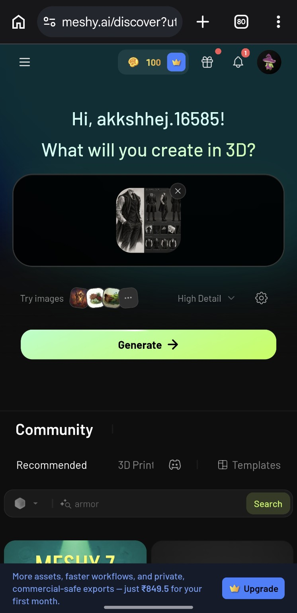

STEP 01

From visual reference to AI-assisted 3D form — exploring structure, layering and contemporary formal menswear through a digital workflow.
The concept combines traditional formal tailoring with a darker, more cinematic silhouette. The long outer layer introduces movement, while the fitted waistcoat preserves a structured and controlled torso.